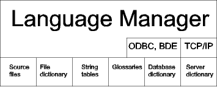

Language Manager is a program that creates and edits MULTILIZER dictionaries and Java's property files.
Language Manager deals with dictionary projects. Each dictionary project contains application information such as the source files and the dictionary data of the application.
Language Manager does not contain the real machine translation feature. However it contains a powerful master dictionary where you can add the most common strings and phrases. At any time you can set Language Manager to translate the strings that are found from the master dictionary.
The following picture contains the items that Language Manager uses or works with:

Language Manager reads the source code of your project to extract strings to the dictionary or to the resource bundle. Multilizer contains several kinds of dictionaries. Language Manager can create and edit all of them. Language Manager uses the glossary files and include-string files to edit to dictionary. Language Manager uses TCP/IP to access Dictionary Server; ODBC or BDE to access database dictionaries, and database master dictionaries.
Language Manager runs on Windows 2000, NT 4.0, and 95/98. It can scan Delphi, C++Builder, C++, Visual Basic, Visual J++, and Java source code.
Language Manager is used by programmers and translators. They are called the Global Localization Workgroup.